Payments
Take a Payment
To initiate any Payment Function either type Ctrl-M (for Money) or click on the icon. The Initial Payment Screen will then appear.
While the Initial Payment Screen may default to a given defendant or a given Payment Reason based on the current record, you may take any valid type of payment on any defendant regardless of the record from which you start.
DEFENDANTThe ‘Case Number’ selected must be a Case of the listed Defendant. The Drop Down Field for Case Number will only display this Defendants cases, unless the ‘Payer is not Defendant’ box is checked. If the ‘Payer is not Defendant’ box is checked, any Case Number may be entered. To the right of the case number, the amount owed on this case is displayed. If the case has not yet been worked, the case will be shown to be pending.
To the right is displayed the number of open cases for this defendant and the number Worked/Pending. Also displayed is the total amount owed.
EMPLOYEEThe Employee logged in is assumed to be the Employee taking the ` payment. If a different Employee is taking the payment, the ‘Change Employee’ button should be clicked and the actual Employee taking the payment should log in.
DEFENDANT INFORMATIONClicking on the Defendant Information button will display all the information of the Payer. The information displayed is the same as if had been pressed.
BONDS AVAILABLEThe total number of CASH BONDS (if any) and the total amount is displayed. If you are about to APPLY, RETURN, or FORFEIT a Bond, ‘Bond to Use’ should display the Bond being acted upon. Press F4 or click the down arrow to see a list of this Defendants Cash Bonds.
REASONThe Reason field defines what type of Action is to take place. If you are in the ‘Cases Table’, the Reason will default to CASE PAYMENT. The Reason field will default depending on the context. Possible choices are:
CASE PAYMENT- for payments on cases. If this is the initial payment, Case Disposition Update will be displayed (Adjudication, Court Date, etc) for possible change. If this is the initial payment, but Court Costs have been waived, the Exclude Costs should be checked. If a Bond is being applied, the bond must be listed in the ‘Bond to Use’ field. If this is a cost prior to Adjudication (like a Warrant Fee) then the PreAdjudication field should be checked. If the Defendant has multiple cases to pay at once, ‘Group All Costs’ should be checked.
CASE PAYMENT SETUP– If a case has been adjudicated, but the defendant is not paying initially, the correct fines and costs should be SETUP. This follows CASE PAYMENT exactly with the exception of the Payment Method defaulting to SETUP (instead of CASH). With SETUP, no receipt number is generated as no actual payment is transacted. This exact function could be accomplished by selecting CASE PAYMENT and changing the Payment Method to SETUP.
MISCELLANEOUS PAYMENT– Payments that do not apply toward a case. Many different uses (Payments for COPIES or FEES).
PARKING– If you have Parking Tickets in the separate Parking Ticket Table and not mixed in the ‘Cases’ Table, this is how you take a Parking Payment. The next screen will help you to identify which ticket. If the Payer Name is NOT the payer of this ticket, it should be cleared before going on. Otherwise, the ticket being paid will be limited to those of the Payer.
VOID RECEIPT– The next screen will help you chose which receipt to void.
REPRINT A RECEIPT- Prints an already existing Receipt
REFUND RECEIPT- If a receipt needs to be returned, but it is too late to VOID, a REFUND will subtract amounts from the given accounts.
DRIVING SCHOOL– Payments applied toward records in the ‘Driving School’ Table.
BOND RECEIVE CASH BOND RECEIVE SURETY BOND RECEIVE PROPERTY- receipts CASH, PROPERTY or SURETY bonds. Although a Case Number or Warrant Number may be referenced, the BOND is taken on the Defendant. No Case Number is required.
BOND DISPOSE RETURN BOND DISPOSE FORFEIT BOND DISPOSE CIRCUIT BOND DISPOSE APPLY- the disposition of a previously received Cash Bond The Bond being disposed must be referenced in the ‘Bond to Use’ field. The ‘BOND DISPOSE APPLY’ is redundant to a ‘CASE PAYMENT’ with a bond reference.
BOND CONVERT SURETY– converts a SURETY to a CASH BOND. Since this is a Surety Bond and ‘Bond to Use’ is for CASH BONDS, the ‘Bond to Use’ field should be blank. The Surety Bond being converted will be determined in the next screen.
When your ‘Initial Payment Screen’ is ready, click on OK. You may also press the F9 key for the same results.
CASE DISPOSITION UPDATE SCREENIf the Payment Action is the Initial Payment on a case, the ‘Case Disposition Update’ screen appears to allow you to input the Adjudication and other possible case information that may need to be changed such as Court Date. You may click OK or press F9 when finished. If no changes are to be made to the Case Record, you may click on CANCEL or press ESC.
CASE PAYMENT SCREEN 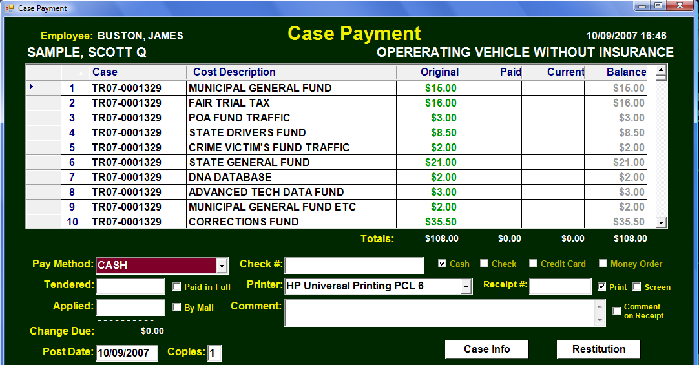Upon first entering the Case Payment Screen, the focus will normally be on the Pay Method defaulted to CASH. You may also select Pay Methods of CHECK, MONEY ORDER, CREDIT CARD, JAIL or SETUP. SETUP would not involve payment actually taken, but instead setting up what is now owed. For all others an amount should be placed in which will then be place in .
The DATA GRID shows the Case Numbers which would vary only if multiple cases are being paid. The next columns are the Fine/Cost Titles, the Original amount owed, the amount Paid prior to this payment, the Current amounts of this payment and the Resulting Balance. As you put in the amount Tendered and Applied, the Current column will fill with the appropriate amounts from top to bottom. You may optionally edit and adjust where the current amounts are to be applied. You may also adjust the Original amounts and Costs as needed. However, an Original amount may not be adjusted below the amount Paid prior to this payment. Previous payments would need to be first voided. The amount in the Applied field must equal the total amount at the bottom of the Current column. If it does not, a red message will appear below the total Cost reflecting how much to add or subtract:
Since FINE is a common item for which to adjust the amount, you may type
Ctrl-F to enter the FINE in a Pop-up Window.

 need only be check if the
case is to be closed prior to full payment
being made. Normally, you will not be
checking this box.
is used to track payments received
in the mail.
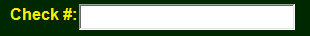 is used to enter a check, money order or
any other reference number.
need only be check if the
case is to be closed prior to full payment
being made. Normally, you will not be
checking this box.
is used to track payments received
in the mail.
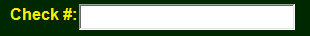 is used to enter a check, money order or
any other reference number.
 Printer is the default receipt printer and may be changed. The receipt number
should normally be left blank so that the system will generate the next receipt
number in sequence. Instead if needed you may manually enter a receipt
number. The Print and Screen check boxes determine if the receipt is to be
printed to the Printer, the Screen or both.
Printer is the default receipt printer and may be changed. The receipt number
should normally be left blank so that the system will generate the next receipt
number in sequence. Instead if needed you may manually enter a receipt
number. The Print and Screen check boxes determine if the receipt is to be
printed to the Printer, the Screen or both.
A comment may be added to the Payment record. If the ‘Comment on Reciept’ box is checked that comment will also be printed on the receipt.
Post Date and number of copies are defaulted and may be changed if needed.
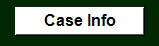 Clicking Case Info will display the ‘Case Disposition Update’ screen previously referenced.
Clicking Restitution will take you to the Restitution Manager for this case.
PAYMENT PLANPayment plan allows you to put in a current or start date. Period payments are to be made (MONTHLY, WEEKLY, BI-WEEKY, VARIABLE). If you then specify the amount, the Next Due and Finish Date will be filled in. If instead you click Fixed Finish, the Finish Date will not change, but the amount will be adjusted so that that Finish Date will be completed. The Amount is rounded up to the nearest $5, so that the last payment could be less than the Amount. You may also click Manual and no calculations will be made. You may then fill in the fields as you wish.
When ready to actually print or display the receipt(s) click on OK or press the F9 key. If you wish to abort this process, click on CANCEL or press ESC. If ‘Setup Return’ is checked, the focus will go back to the ‘Initial Payment Screen’ when finished.
MISCELLANEOUS PAYMENT
Miscellaneous Payment Screen has a similar look as the Case Payment Screen. A case may, but does not have to be referenced. The payment record will have the Misc Receipt box checked.
PARKING PAYMENT
Selecting PARKING on the Initial Payment Screen will bring up the Payment Parking Screen designed to help you pick the Parking Ticket that is being paid. Clicking OK or Pressing F9 brings up this now familiar payment screen.
Reprint a Receipt
Following the same instructions for taking a Case Payment, change the reason on the Initial Payment Screen to REPRINT RECEIPT.
Pressing F9 or clicking on OK will take you to the Receipt Reprint Screen.
The receipt number to reprint must be referenced on this screen. Clicking on OK will reprint that receipt to either the Printer or Screen or Both.
Notice that the Original Receipt with the Original Date and Time are printed below the REPRINTED: banner. The REPRINTED: banner shows the current Date and Time the reprint took place.
Void a Payment
Following the same instructions for taking a Case Payment, change the reason on the Initial Payment Screen to VOID RECEIPT.
Pressing F9 or clicking on OK will take you to the Void Receipt Screen.
The receipt to be voided must first be entered on this screen along with a Reason for Void. 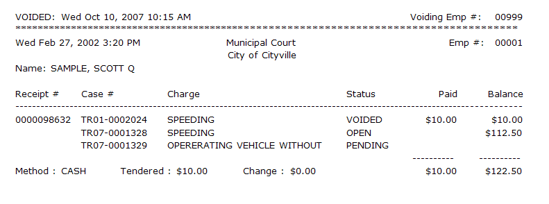
Notice that the Original Receipt with the Original Date and Time are printed below the VOIDED: banner. The VOIDED: banner shows the Date and Time the Void took place along with the Voiding Employee.
Receive a Cash Bond
Following the same instructions for taking a Case Payment, change the reason on the Initial Payment Screen to BOND RECEIVE CASH.
Pressing F9 or clicking on OK will take you to the Receive Bond Screen. 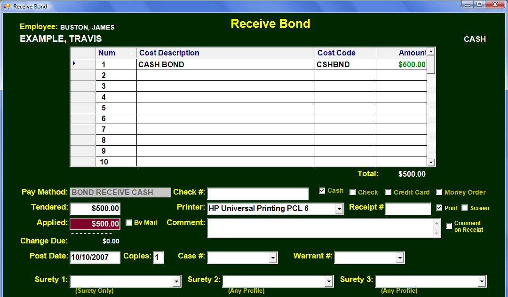
Put in the Bond Amount in Tendered and Applied to Receive the Cash Bond.
Forfeit, Return, Apply a Bond
Following the same instructions for taking a Case Payment, select the bond in the ‘Bond to Use’ field on the Initial Payment Screen. Put the BOND DISPOSE FORFEIT, BOND DISPOSE RETURN, BOND DISPOSE CIRCUIT or BOND DISPOSE APPLY in the ‘Reason’ field.
Note that if this is a BOND APPLY you may also select CASE PAYMENT in the ‘Reason’ field.
Pressing F9 or clicking on OK will take you to the Dispose Bond Screen. 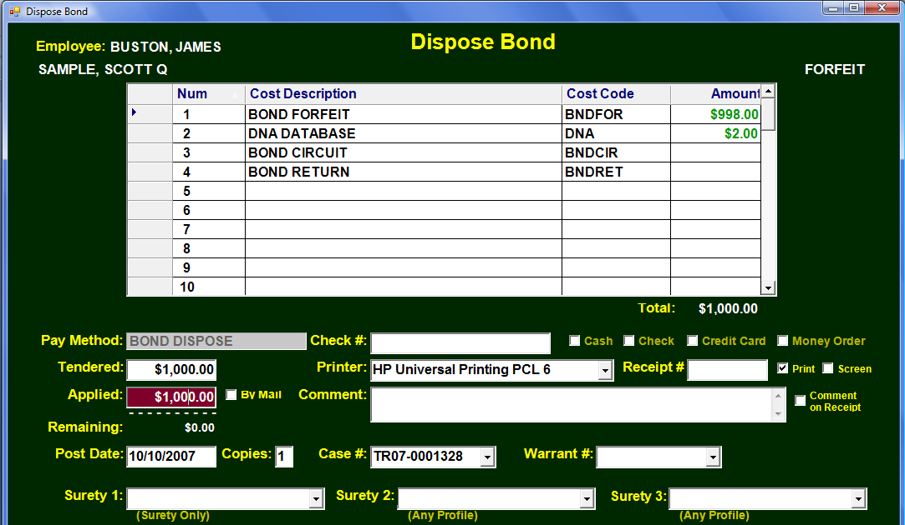
The amount applied will already be filled in from the original bond. You may change the amounts for FORFEIT, CIRCUIT, or RETURN as needed. You do not have to use the entire bond amount. Any amount left over will be available to dispose of in the future. A BOND APPLY will go to a regular Case Payment screen with BOND APPLY as Pay Method.
Manage Restitution
In order to manage Restitution on a particular case, that case must have Restitution setup in the Payment Manager. Add Restitution as a row in the Initial Fines and Cost setup. You may do this later by beginning to take a Case Payment, adding Restitution and changing the Pay Method to SETUP. 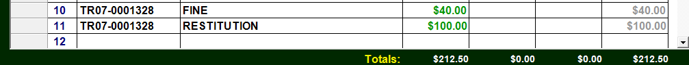
Once Restitution in place on this case, you need to go to the Restitution
Manager to setup the Receiver or Payee of the Restitution. You may display
the Restitution Manager by going
to the particular case in the Case
Table, clicking on the Options
Menu, and then clicking on
Restitution Manager.
This same
task may be accomplished by
typing Ctrl-R. In the Payment
manager on the Case Payment
Screen there is a  button that will also display the Restitution
Manager.
button that will also display the Restitution
Manager.
The Restitution Receivers or Payees need to be entered here. The Amount must be the amount from the Restitution row in the Payment Setup. This amount may be split as needed among various Payees. Each Payee must have a record in the Profile Manager with the name and address. If there is not a record in the Profile Manager for the Payee, one must be created. (See NAME DROP DOWN FIELD in the Field Types Section of this manual.) You may press F4 and start typing the last name or you may type Ctrl-N or right click the field and select ‘Create New Profile’ from that menu.
There must be one or more Payees with the Amounts owed to them equal to the Restitution setup for the Defendant to pay.
Once the Payee Name is in place, no further action is needed in Restitution Manager until the Defendant has made payments toward Restitution. If $60 of the Total $100 of Restitution was paid by the defendant the Restitution Manager would look like this:
The Amount Column remains at the Original $100. $60 has been received from the Defendant. The Defendant still owes a balance of $40. The court now has $60 that needs to be sent to the Payee. There are Restitution reports that will alert the court that money needs to be sent to the Payee. You acknowledge that the Restitution was actually mailed to the Payee by putting the Date Sent and the optional Check Number in place.
By clicking OK at the bottom of this screen, you are telling the system that you have sent $60 to the Payee.
If you were to look at the Restitution Manager now, it would show that the Defendant still has to pay $40 and that the court does not currently owe the Payee any outstanding balance.
The bottom Restitution Payments Sent grid will show a history of when the court sent the Payee the Restitution it previously collected.
Display Defendent Information
A complete presentation of a Defendants Information may be viewed by clicking on the Information Button or in the Payment Manager:
CASES 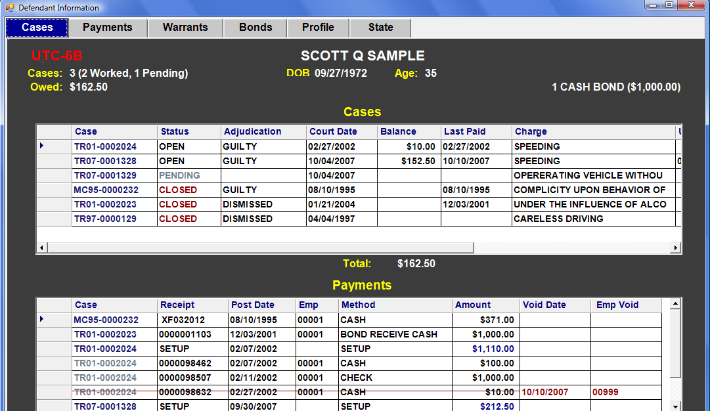The Defendant Information Screen has 6 Tabs or Sections. The first section is Cases. Red Alerts (UTC-6B, UTC-25, WARRANTS, UNDER 18, etc) are across the top followed by a summation of the number of Open Cases, Amount Owed and Cash Bonds. The Cases Data Grid shows all the defendants cases, current status, balance, etc. The Payments Grid breaks down the payments on a case basis. Notice that voided payments have a red line through them and that subsequent multiple payments on the same case are lighter. You may double click in the margin to the left of any record and that record will open up in another window for viewing or editing.
When finished you click on OK or press F9 key. CHANGE DEFENDANT will allow to select another defendant’s information. PRINT HISTORY gives you options to print any or all of the information in the 6 tabs.
PAYMENTSThe Payments tab shows all defendant payments on a time basis starting with the most recent. Again, you may left click on the margin to go to that record.
WARRANTSThe Warrants Tab shows all Warrants for the defendant including the status of the warrant, date issued, served, recalled, etc.
BONDSThe Bonds Tab shows all the defendants bonds and their respective balances.
PROFILEThe Profile Tab displays the 1 Profile for this defendant. The Records Attached grid displays every place in the system that Profile is referenced.
STATEIf available, a state drivers history will be displayed for this defendant.
PRINTING DEFENDANT HISTORYBy clicking on the Print History Button on the Cases Tab you may choose from the many options on exactly what information you want printed.
Logging In to the Program
From your desktop double click on the MSG Court Manager Icon. The Application should now load. Depending on your System Setup, the following “Employee Validation” screen may appear: 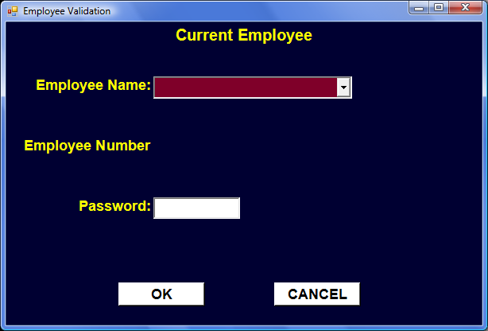
Your employee name and password may now be entered. You must first put your name in the “Employee Name” field. This may be accomplished several different ways.
You may click on the arrow to the right of the employee name field to display a “Drop down” list of employees from which to select your name.
Alternatively, you may enter your employee ID number in this field and press either the ENTER or the TAB key. Note that you do not have to enter the leading zeros on the 5 digit employee ID number. Employee ID 00015 may simply be entered as 15.
You may also enter the first few letters of your last name and press either the ENTER or TAB key. Note that if you enter the first letter or several letters of your last name it must be enough to distinguish it from other Employee names. If you are the only employee whose last name begins with ‘S’, you would only need to enter ‘S’. Should your Name not appear on this list, an Application Administrator would need to add it to the Employee Data Table.
FIELD FOCUSIn General, a field with the RED color has the FOCUS and is ready to accept input. To change the FOCUS to another field you may press ENTER, TAB, Arrow keys or simply mouse click the field to which you wish to give the FOCUS.
PASSWORDOnce the Employee Name is displayed you should change the FOCUS to the Password field. (with ENTER or TAB) You may type in your password. Your password will remain hidden as asterisks ‘*’ will appear as you type. Should you forget your PASSWORD, an Application Administrator would need to re-enter your PASSWORD in the Employee Data Table.
With both your Name and Password Entered, you may continue by pressing the F9 key. You could also continue by giving the FOCUS to the OK button and pressing ENTER. Alternatively, you could Double Click the OK button.
WINDOWS LOGIN OPTIONBy setting the appropriate parameter, your Application may be setup to use the WINDOWS LOGIN for Validation. This option will allow you to skip the above Employee Validation Box. Instead the Application will know who you are based on your initial Windows Login to your computer or Network. While this option may be more convenient, it is less secure. Once you have logged on to your computer, anyone could then click on the icon and go directly to the MAIN SCREEN.
After proper Employee Validation, you are ready to start your adventure on the MAIN SCREEN.
Search for a Record
The means by which you search for a given record will vary based upon which table you are in. You may begin by clicking on Options and then on the menu item ‘Quick Search’. Using the shortcut ‘F1’ is much simplier.
If you are in the ‘Cases’ Table the resulting window is:
The white label under the ‘Search for’ field will inform you the various ways to access this table in ‘Quick Search’. If you are searching by name you may enter the last name, comma, space, first name to display that record to select. It’s often easier just to enter the first letter or first few letters of the last name to bring up the list of names.
Entering CR will display: 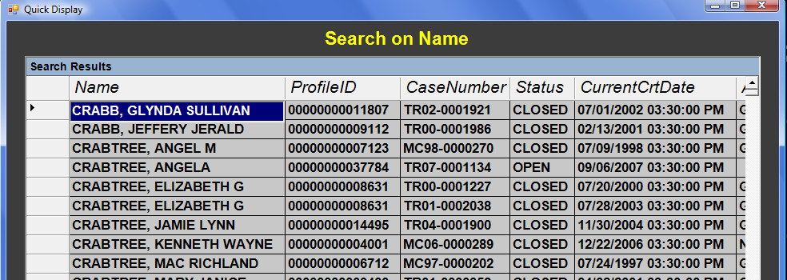
You may now scroll up and down this list to find the case you want. Notice that the list is in alphabetical order by name. Pressing Enter on the record you want will cause this screen to disappear and place you on that record. You may also search by Case Number. Entering TR07-1328 will yield:
Now you may scroll through the records in ‘Case Number’ order pressing ‘Enter’ on the one to which you wish to go. Likewise in the ‘Case’ Table you may also search by Court Date and UTC Number.
If you were in the Warrants Table your ‘Search’ window would look like: 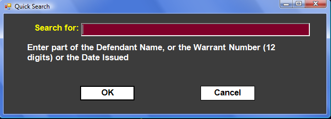
The only difference in the ‘Warrants’ Table search and the ‘Case’ Table search is on what you are searching. For warrants you may search by Defendant Name, Warrant Number, or Date Issued. Each Table has its own unique fields on which you can search.
If a table does not have many records, this ‘Search for’ window may be by-passed and a display of all the records appear. If you were in the ‘Case Type’ Table and pressed F1 you would see: